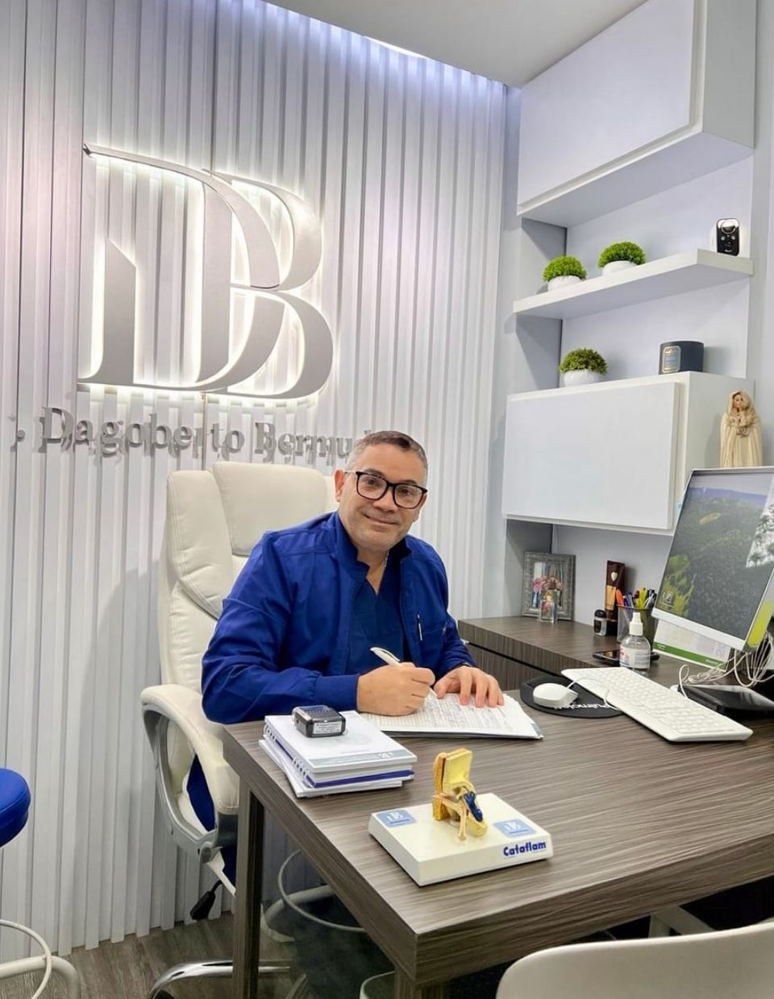

Diagnóstico y tratamiento de oído, nariz y garganta con tecnología avanzada y atención personalizada.
Hospital Clínico de Maracaibo · Consultorio 166, Piso 1
Evaluación especializada en afecciones de oído, nariz y garganta, con diagnóstico preciso y atención adaptada a cada paciente.
Un enfoque que mejora la función respiratoria y la armonía facial, respetando la anatomía y naturalidad de cada paciente.
Atención presencial con tecnología diagnóstica avanzada, o consulta online para pacientes fuera del país.
Hospital Clínico de Maracaibo, Consultorio 166, Piso 1. Estudios diagnósticos realizados en el mismo consultorio.
Ideal para pacientes fuera del país. Orientación médica, revisión de estudios o evaluación inicial desde tu hogar.
Trabajamos con diferentes seguros para facilitar el acceso a atención especializada. Consultá la cobertura disponible al momento de agendar tu cita.
Excelente atención. El doctor es muy profesional, claro en sus explicaciones y cuenta con tecnología de punta en su consultorio.
Excelente atención y diagnóstico. Me sentí muy bien atendida, el doctor es muy humano y dedicado con sus pacientes.
Excelente profesional! Muy humano! Agradecido con el doctor Dagoberto por su atención y el cuidado con cada paciente.
Seguí nuestro contenido sobre salud ORL, procedimientos y novedades del consultorio.
Información para que puedas tomar una decisión informada sobre tu salud antes de consultar.
Consultar por WhatsApp